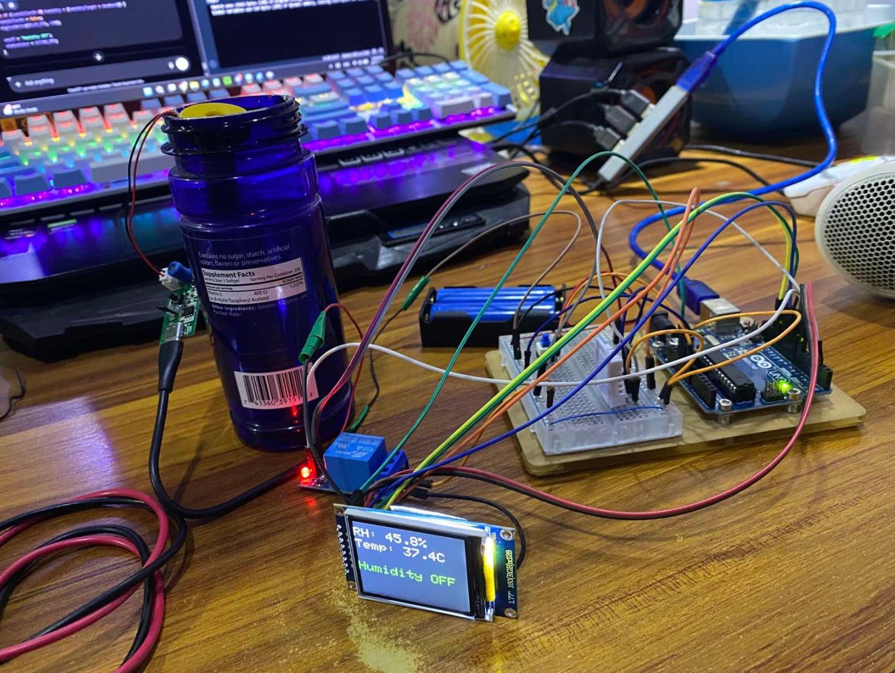

Portfolio Completion Checklist
Track your final review status across all key portfolio requirements.
Nay Min Myat
Year 9 Student | STEM & Tech Focus
EDUSN | Class of 2029
School: EDUSN
Major Interest: Computer Science & Software Engineering
Team: A.N.S Academic Research Team
1. Student Profile & Bio
I am Nay Min Myat, a Year 9 student at EDUSN with a profound passion for programming, software engineering, and technology in general. I enjoy solving complex logic problems and building interactive web experiences. What matters to me is creating accessible technology that improves community welfare and operational transparency, a drive that directly inspired my recent research on smart cities. Beyond coding, I enjoy immersive gaming like Hollow Knight and Elden Ring, and hobbies like collecting Action Figures, Statues, and Gunpla, which train my strategic thinking and perseverance. After graduation, I plan to pursue computer science or engineering.
2. Academic Progress & Record
Current academic standing
Academic Overview
Year 7 Final Report
Academic record and final assessment results
Year 8 Final Report
Academic record and final assessment results
College Readiness Skills
SkillsTime management
Organization
Study habits
Research
Critical thinking
Problem-solving
Writing
Presentation
Teamwork
Digital literacy
3. Awards & Certificates

Cambridge English Qualifications Suite
Successfully completed and certified across Starters, Movers, Flyers, and KET.
Outstanding Achievement Awards (Dual Milestones)
Recognized with two consecutive special distinction awards for sequential progression and high proficiency performance.
Best Student of the Month
Recognized as Best Student of the Month for outstanding academic performance, participation, and overall contribution to the school community.
4. Best Work / Projects Included
Yangon-Digital-Governance Repository
GitHub / Collaborative Research (A.N.S Team)
Contributed to municipal digital governance research and technical repository maintenance focused on smart city community engagement.
View RepositoryArduino Air Purifier (Year 8 Science PBL)
Physical Computing / Microcontroller Logic & Hardware Parts
Designed and built an automated air purifier prototype using Arduino microcontrollers, embedded logic programming, sensors, and hardware components to measure and improve indoor air quality.


5. Activities & Leadership Documented
School Assembly Host — Year 8 & Year 9
School Leadership & Public Speaking
Served as a host for school assemblies across Years 8 and 9, developing public speaking, communication, and presentation skills while confidently engaging with the school community.
Performing Arts & School Events Participant
School Events & Collaborative Performance
Participated in role-play and dance performances for two school events, contributing to collaborative rehearsals and live presentations while developing confidence and teamwork skills.
Project-Based Learning (PBL) Collaborator
Teamwork & Project Collaboration
Collaborated with classmates on project-based learning activities, contributing ideas, coordinating tasks, and working toward shared project outcomes through effective teamwork and communication.
6. Career Exploration
Exploring software engineering, full-stack web development, and civic technology. Investigating how digital governance tools can improve urban sustainability.
Goal: Software Architect & Developer7. College & Major Plan
- Intended Major: Bachelor of Science in Computer Science
- Focus: Software Development & UI/UX Design
- Next Milestone: Maintain active GitHub portfolio and master advanced programming languages.
College / University List
College & Career Action Plan
Action Plan| Goal | Action Steps | Timeline | Evidence of Success |
|---|---|---|---|
| Strengthen academic performance | Continue improving study routines and track academic progress. | Year 9 → IGCSE / O Level | Updated report cards and GPA progress |
| Build a stronger technical portfolio | Continue developing projects and maintaining GitHub repositories. | Year 9 → IGCSE / O Level → Foundation Year | Completed projects and active GitHub portfolio |
| Explore computer science pathways | Research universities, courses, majors and admission requirements. | Year 9 → IGCSE / O Level | College research notes and shortlist |
| Develop programming skills | Learn more advanced programming languages and software development practices. | Year 9 → University | New projects demonstrating learned skills |
| Prepare for future applications | Collect certificates, projects, reflections and other evidence of development. | Year 9 → IGCSE / O Level → Foundation Year | Updated portfolio and application materials |
Student Resume Snapshot
Application PreparationNay Min Myat
Add contact information
EDUSN • Class of 2029 • Year 9 student • Current GPA 3.0/4.0
School assembly host • Role-play and dance performances • PBL collaboration
Communication • Presentation • Critical thinking • Problem-solving • Teamwork • Digital literacy
Yangon Digital Governance Repository • Arduino Air Purifier PBL • Smart city research
8. Grade Reflections
"Working on smart cities research and ICT project-based learning taught me how independent technical research translates into real-world applications. I improved my version control and UI/UX design workflows."
9. Final Reflection
"This portfolio reflects my growth from Year 8 into Year 9 at EDUSN. By combining coding, collaborative research with the A.N.S team, and UI/UX design, I am building the foundation for a future in software engineering."
My Growth
THEN → NOW → NEXT
Something I struggled with
Earlier in my school journey, I struggled with staying focused on my schoolwork, maintaining a consistent attention span, and developing effective study habits. I needed to become more disciplined with how I used my time so that I could focus more on learning.
How I've improved
I am now trying my best to put my phone aside whenever possible when I need to focus. I have also started changing the way I use the internet by trying to use it more for learning, research, and developing useful skills instead of only for entertainment.
What I will continue developing
Moving forward, I want to continue improving my study habits and become more consistent with my learning. I also want to develop my skills in computer science, programming, computer hardware, and other areas of technology that will help me prepare for my future studies and career.
Teacher's Recommendation
Mr. Zwe Htet Naing - "Nay Min Myat is a good communicator who has demonstrated strong potential as a leader. He possesses excellent critical-thinking skills and is capable of developing innovative ideas. He has a genuine love for learning and is able to present his ideas clearly and confidently. He also applies the skills and knowledge he develops effectively in his projects, demonstrating both creativity and a willingness to put his learning into practice."
Teacher's Recommendation
Ms. May Mon Lynn - "He demonstrates strong collaboration skills in every group activity and is always eager to learn new skills. He has a genuine interest in ICT, especially in web design and web development. In addition, he is always willing to help others and consistently shows respect toward his teachers and classmates. He is also well-behaved in class and does not disturb others during lessons. One area in which he can continue to develop is leadership. While he collaborates very effectively with his peers and makes valuable contributions to group projects. With greater confidence and continued opportunities to lead, I believe he can further develop his leadership, decision-making Based on my experience teaching him, I believe he has strong potential for continued academic and personal growth. His enthusiasm for ICT, willingness to learn, collaborative nature, and respectful attitude will serve him well as he pursues higher education."